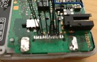
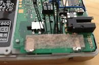
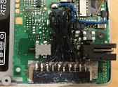
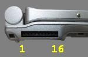
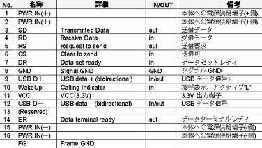
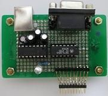
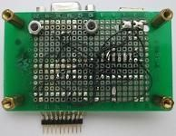
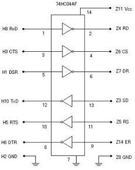
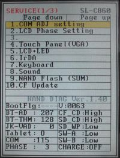
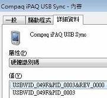

Sharp Zaurus SL-C860
製作UART、USB接頭
Zaurus機器都具有一個特殊I/O接頭，該接頭有UART、USB和Power的腳位，由於Zaurus機器已經出產蠻久了，目前這種排線不容易買到，但是，沒有UART和USB介面的協助，想要Debug程式或下載測試程式就會變得相當麻煩，因此，司徒決定動手製作這樣的接頭。
首先拆開SL-C860機器並且把I/O連接器拆掉

避免短路彼此的焊點，貼個保護膠帶

使用比較小的母座，讓背蓋可以完好如初的蓋回去

蓋回去的狀況

下圖是I/O的腳位定義

接著焊接UART、USB轉接板


由於SL-C860機器的I/O是使用3.3V電壓，如果使用者的USB轉UART線是3.3V的話(TTL準位)，就可以直接用，如果不是的話，就必須焊一顆MAX232或HIN232元件，提供0V~3.3V轉-12V~+12V的Level Shift，目前司徒使用HIN232元件做Level Shift，此外，還有另一個問題需要解決，那就是SL-C860機器的UART腳位電壓狀態是反向的，也就是準位0代表準位1，所以還需要一顆74LS04做反向的動作，而USB的部份，就直接接到USB接頭即可。
目前司徒只有焊接UART的TX、RX以及USB的D+、D-四條線。

焊接完後，將SL-C860機器關機，並將UART連接到電腦，接著開啟終端機(Baudrate 9600bps)，接著開啟SL-C860機器的電源就可以看到Bootloader的輸出訊息
NAND LOADER ... in NAND built on Jul 23 2003 at 16:23:45 (0) BOOT: Linux kernel func = 00000100 **** LoadImage *** store_adr = 000e0000 load_adr = 00008000 size = 0013c000 mainlinuxparam=00000000 ro_size=03500000 COMMANDLINE= console=ttyS0 root=/dev/mtdblock2 mtdparts=sharpsl-nand:7168k@0k(smf), 54272k@7168k(root),-(home) jffs2_orphaned_inodes=delete LOGO=1 LAUNCH=q *** JUMP to LINUX! ***
如果使用者的Zaurus機器是處於磚塊狀態時，也可以使用另一種方式測試
1. 拔掉電源線以及電池
2. 將背後的電池開關切到使用中
3. 開啟終端機(Baudrate 2400bps)
4. 同時按住SL-C860的D + R
5. 放入電池後，就可以看到如下訊息
READY REMOTE CHECK
USB的部份就必須借助Service功能測試
1. 拔掉電源線以及電池
2. 將背後的電池開關切到使用中
3. 連接USB線到電腦
4. 同時按住SL-C860機器的Fn + D + M
5. 放入電池後，就可以看到如下畫面

選擇Service(2/3)的USB Test就可以在電腦上看到如下USB裝置

當USB連接成功後，SL-C860機器也會顯示Connect OK!訊息